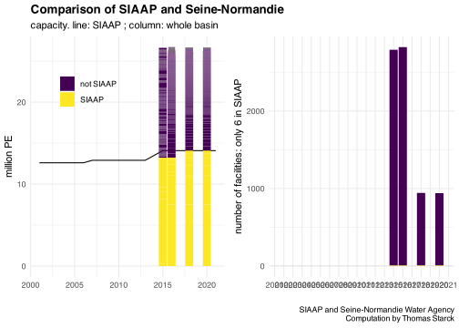
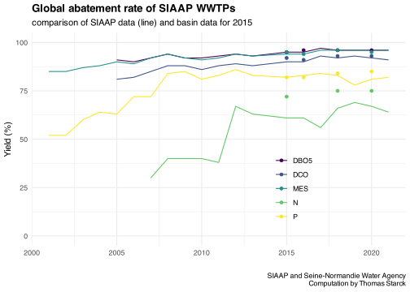

knitr::opts_chunk$set(warning=F, message=F, results=F, dev='svg')library(tidyverse) #loads multiple packages (see https://tidyverse.tidyverse.org/)#core tidyverse packages loaded:# ggplot2, for data visualisation. https://ggplot2.tidyverse.org/# dplyr, for data manipulation. https://dplyr.tidyverse.org/# tidyr, for data tidying. https://tidyr.tidyverse.org/# readr, for data import. https://readr.tidyverse.org/# purrr, for functional programming. https://purrr.tidyverse.org/# tibble, for tibbles, a modern re-imagining of data frames. https://tibble.tidyverse.org/# stringr, for strings. https://stringr.tidyverse.org/# forcats, for factors. https://forcats.tidyverse.org/# lubridate, for date/times. https://lubridate.tidyverse.org/#also loads the following packages (less frequently used):# Working with specific types of vectors:# hms, for times. https://hms.tidyverse.org/# Importing other types of data:# feather, for sharing with Python and other languages. https://github.com/wesm/feather# haven, for SPSS, SAS and Stata files. https://haven.tidyverse.org/# httr, for web apis. https://httr.r-lib.org/# jsonlite for JSON. https://arxiv.org/abs/1403.2805# readxl, for .xls and .xlsx files. https://readxl.tidyverse.org/# rvest, for web scraping. https://rvest.tidyverse.org/# xml2, for XML. https://xml2.r-lib.org/# Modelling# modelr, for modelling within a pipeline. https://modelr.tidyverse.org/# broom, for turning models into tidy data. https://broom.tidymodels.org/# Use the conflicted package (<http://conflicted.r-lib.org/>) to force all conflicts to become errors#loading additional relevant packageslibrary(cowplot) #for plot_grid()library(readxl) #to read excel file#setting graphs themetheme_set(theme_minimal() +theme(plot.title =element_text(face="bold") ) )#setting viridis theme for colorsscale_colour_continuous <- scale_colour_viridis_cscale_colour_discrete <- scale_colour_viridis_dscale_colour_binned <- scale_colour_viridis_b#setting viridis theme for fillscale_fill_continuous <- scale_fill_viridis_cscale_fill_discrete <- scale_fill_viridis_dscale_fill_binned <- scale_fill_viridis_bSource <-"SIAAP and Seine-Normandie Water Agency\nComputation by Thomas Starck"Year_analysis <-2015# Load the function filesource("functions.R")
Basin description in Seine-Normandie Etat des lieux for 2019 and 2013. There are 18.7 million inhabitants, and in 2019 1.2 are not connected to sewers.
More description in the “Guide de l’eau” (water guide) here et here
For this basin, we only have complete data of all WWTP for some particuliar years (2014, 2015, 2016, 2018 and 2020), provided by mail. 2015 is from Etat des lieux report, and have more extensive WWTP description and pollution description. The other data are exctractions from the water agencies following our demand and are less detailed.
We also have data for the 6 SIAAP (Syndicat Interdépartemental pour l’Assainissement de l’Agglomération Parisienne) WWTPs during 2001-2020, which handle half fo the basin flows (also provided by mail).
For 2015, where NO2 and NO3 are also reported, we use the following approximation when NGL is not reported :
for incoming flow, if NTK is reported, we use it in lieu of NGL
for outgoing flow, if NTK and NO3 are reported, we use their sum in lieu of NGL
For 2016, only NTK is reported and not NGL. For incoming low, we approximate NGL by NTK. The approximation does not hold for outgoing flow.
We load the data from all the years
Code
path_source <-"source_data/03_seine_normandie/"file_seine_normandie_2015 <-read_excel(paste0(path_source, "pression macropolluants_STEU collectivités_2015.xlsx"), sheet ="flux et rdts ") %>%mutate(Year =2015 )file_seine_normandie_2015 <- file_seine_normandie_2015 %>%select(code_WWTP =`code STEU`,name_WWTP =`nom STEU`,name_commune =`nom de la commune d'implantion`,capacity =`capacité nominale steu (EH)`,Pt_in =`Ptot entrée (kg/an)`,NGL_in =`NGL entrée (kg/an)`,NTK_in =`NR entrée (kg/an)`,NO2_in =`NNO2 entrée (kg/an)`,NO3_in =`NNO3 entrée(kg/an)`,DBO5_in =`DBO5 entrée (kg/an)`,DCO_in =`DCO entrée (kg/an)`,MES_in =`MES entrée (kg/an)`,Pt_out =`Ptot sortie (kg/an)`,NGL_out =`NGL sortie (kg/an)`,NTK_out =`NR sortie (kg/an)`,NO2_out =`NNO2 sortie (kg/an)`,NO3_out =`NNO3 sortie (kg/an)`,DBO5_out =`DBO5 sortie (kg/an)`,DCO_out =`DCO sortie (kg/an)`,MES_out =`MES sortie (kg/an)`,treatment_type =`Filière eau principale (ROSEAU)`,N_treatment =`traitement en N poussé (ROSEAU)`,P_treatment =`traitement en P poussé (ROSEAU)`,flow_in =`débit entrant (ROSEAU) (m3/j)`,flow_nominal =`débit de référence (ROSEAU) (m3/j)` ) %>%mutate(Year=2015) %>%#transform flows from kg/year to kg/daymutate(across(c(NGL_in, NTK_in, NO2_in, NO3_in, Pt_in, DBO5_in, DCO_in, MES_in, NGL_out, NTK_out, NO2_in, NO3_in, Pt_out, DBO5_out, DCO_out, MES_out), ~signif(.x/365, 3) ) ) %>%ungroup() %>%# we need to be "row wise" to use "sum(., na.rm=T) : # just summing the columns A+B would return NA when at least 1 columns as NA in the rowrowwise() %>%mutate(NGL_in =case_when(#when NGL in is not reported, if NTK_in reported we accept to not consider unreported NO2_in and NO2_in as 0 (because NO in negligible)#if NTK_in unreported, NGL_in is unreportedis.na(NGL_in) ~sum(NTK_in, NO2_in, NO3_in, na.rm=!is.na(NTK_in)), T ~ NGL_in ),NGL_out =case_when(#when NGL out is not reported, NO3 and NTK must be reported, and we accept to neglect NO2 when it is unreported.is.na(NGL_out) ~sum(NTK_out, NO2_out, NO3_out, na.rm=!((is.na(NTK_out)|is.na(NO3_out)))), T ~ NGL_out ) )file_seine_normandie_2014 <-read_excel(paste0(path_source, "DonnéesSTEU2014-2020.xlsx"), sheet ="données2014", col_types =c("text", "text", "numeric", "numeric", "numeric", "numeric", "numeric", "numeric", "numeric", "numeric", "numeric", "numeric", "numeric", "numeric", "numeric", "numeric", "numeric", "numeric", "numeric", "numeric", "numeric")) %>%select(code_WWTP = CODE_SANDRE,name_WWTP =`Nom step`,capacity =`Capacité Nominale\r\n(EH)`,MES_in =`FLUX ENTRANT\r\nKg/an\r\n(MES )` ,MES_out =`FLUX SORTANT\r\nKg/an\r\n(MES )`,DBO5_in =`FLUX\r\nENTRANT\r\nKg/an\r\n(DBO5)`,DBO5_out =`FLUX\r\nSORTANT\r\nKg/an\r\n(DBO5)`,DCO_in =`FLUX\r\nENTRANT\r\nKg/an\r\n(DCO)`,DCO_out =`FLUX\r\nSORTANT\r\nKg/an\r\n(DCO)`,NTK_in =`FLUX\r\nENTRANT\r\nKg/an\r\n(NTK)`,NTK_out =`FLUX\r\nSORTANT\r\nKg/an\r\n(NTK)`,Pt_in =`FLUX\r\nENTRANT\r\nKg/an\r\n(PT)`,Pt_out =`FLUX\r\nSORTANT\r\nKg/an\r\n(PT)`,NGL_in =`FLUX\r\nENTRANT\r\nKg/an\r\n(NGL)`,NGL_out =`FLUX\r\nSORTANT\r\nKg/an\r\n(NGL)`,DBO5_yield =`Rdt DBO5`,DCO_yield =`Rdt DCO`,MES_yield =`Rdt MES`,NTK_yield =`Rdt NTK`,Pt_yield =`Rdt PT`,NGL_yield =`Rdt NGL` ) %>%mutate(Year =2014 ) %>%#transform flows from kg/year to kg/daymutate(across(c(NGL_in, NTK_in, Pt_in, DBO5_in, DCO_in, MES_in, NGL_out, NTK_out, Pt_out, DBO5_out, DCO_out, MES_out), ~signif(.x/365, 3) ) ) file_seine_normandie_2016 <-read_excel(paste0(path_source, "DonnéesSTEU2014-2020.xlsx"), sheet ="données2016") %>%rename(code_WWTP =`code steu` ,name_WWTP =`nom de la steu` ) %>%mutate(Year =2016,NGL_in = NTK_in ) %>%#transform flows from kg/year to kg/daymutate(across(c(NGL_in, NTK_in, Pt_in, DBO5_in, DCO_in, MES_in, NTK_out, Pt_out, DBO5_out, DCO_out, MES_out), ~signif(.x/365, 3) ) ) file_seine_normandie_2018 <-read_excel(paste0(path_source, "DonnéesSTEU2014-2020.xlsx"), sheet ="données2018") %>%select(code_WWTP =`Code Sandre STEU` ,name_WWTP =`Nom STEU` ,capacity =`Capacité STEU ROSEAU (EH)`,DBO5_in =`Entrée DBO5 (kg/an)` ,DBO5_out =`Sortie DBO5 (kg/an)`,DCO_in =`Entrée DCO (kg/an)` ,DCO_out =`Sortie DCO (kg/an)`,MES_in =`Entrée MES (kg/an)` ,MES_out =`Sortie MES (kg/an)`,NGL_in =`Entrée NGL (kg/an)` ,NGL_out =`Sortie NGL (kg/an)`,NH4_in =`Entrée NH4 (kg/an)` ,NH4_out =`Sortie NH4 (kg/an)`,NTK_in =`Entrée NTK (kg/an)` ,NTK_out =`Sortie NTK (kg/an)`,Pt_in =`Entrée PT (kg/an)` ,Pt_out =`Sortie PT (kg/an)`,flow_in =`Volume entrée (m3/an)`,flow_out =`Volume sortie (m3/an)` ) %>%mutate(Year =2018 ) %>%#transform flows from kg/year to kg/daymutate(across(c(NGL_in, NH4_in, NTK_in, Pt_in, DBO5_in, DCO_in, MES_in, NGL_out, NH4_out, NTK_out, Pt_out, DBO5_out, DCO_out, MES_out), ~signif(.x/365, 3) ) ) file_seine_normandie_2020 <-read_excel(paste0(path_source, "DonnéesSTEU2014-2020.xlsx"), sheet ="données2020") %>%select(code_WWTP =`Code Sandre STEU` ,name_WWTP =`Nom STEU` ,capacity =`Capacité STEU ROSEAU (EH)`,DBO5_in =`Entrée DBO5 (kg/an)` ,DBO5_out =`Sortie DBO5 (kg/an)`,DCO_in =`Entrée DCO (kg/an)` ,DCO_out =`Sortie DCO (kg/an)`,MES_in =`Entrée MES (kg/an)` ,MES_out =`Sortie MES (kg/an)`,NGL_in =`Entrée NGL (kg/an)` ,NGL_out =`Sortie NGL (kg/an)`,NH4_in =`Entrée NH4 (kg/an)` ,NH4_out =`Sortie NH4 (kg/an)`,NTK_in =`Entrée NTK (kg/an)` ,NTK_out =`Sortie NTK (kg/an)`,Pt_in =`Entrée PT (kg/an)` ,Pt_out =`Sortie PT (kg/an)`,flow_in =`Volume entrée (m3/an)`,flow_out =`Volume sortie (m3/an)` ) %>%mutate(Year =2020 ) %>%#transform flows from kg/year to kg/daymutate(across(c(NGL_in, NH4_in, NTK_in, Pt_in, DBO5_in, DCO_in, MES_in, NGL_out, NH4_out, NTK_out, Pt_out, DBO5_out, DCO_out, MES_out), ~signif(.x/365, 3) ) ) #2016 dose not have WWTP capacity, we add it from the other filesfile_seine_normandie_2016 <-left_join( file_seine_normandie_2016, file_seine_normandie_2015 %>%select(code_WWTP, capacity),by ="code_WWTP")#some WWTP still have no capactiy reportingtemp <- file_seine_normandie_2016 %>%filter(is.na(capacity)) #to see them (just 6)#we remove these WWTPsfile_seine_normandie_2016 <- file_seine_normandie_2016 %>%filter(is.na(capacity)==F)N_P_seine_normandie <-bind_rows( file_seine_normandie_2014, file_seine_normandie_2015, file_seine_normandie_2016, file_seine_normandie_2018, file_seine_normandie_2020)rm(file_seine_normandie_2014, file_seine_normandie_2015, file_seine_normandie_2016, file_seine_normandie_2018, file_seine_normandie_2020)
We create the WWTP capacity categories in terms of population equivalent.
In the SIAAP files, we do not have the inflows of NO2 and NO3. This is not really important, since the oxidised forms of N are negligible in the sewer network.
Incoming flows are made of A2 and A3 points, but A2 is generally negligible (~1% of A3). Outgoing flow is the A4 point. More info on this points here.
Before 2007, NGL is not reported. We could yet compute the inflow P/N ratio, since in the inflow NGL is almost equal to NTK. This approximation can not be done for the outflow where NO3 and NO2 are not negligible.
We load the file with the aggregated values of SIAAP for 2001-2014. Careful, the flows are in tons per day in the original file.
Code
path_source <-"source_data/03_seine_normandie/SIAAP/"file_basin_SIAAP_2001_2015 <- readxl::read_excel(paste(path_source, "SIAAP_bilan_annuel_basin.xlsx", sep=""))#we convert the basin flows from t/d to kt/ybasin_N_P_SIAAP_2001_2015 <- file_basin_SIAAP_2001_2015 %>%mutate(#convert into kt per yearacross(c(NGL_in, NTK_in, Pt_in, DBO5_in, DCO_in, MES_in, NGL_out, NTK_out, Pt_out, DBO5_out, DCO_out, MES_out), ~signif(.x*365/10^3, 3) #now in kt per year ),#when unavailable approximate NGL_in by NTK_inNGL_in =case_when(is.na(NGL_in) ~ NTK_in, T ~ NGL_in ) ) %>%#capacitymutate(capacity =case_when( Year>=2018~(7500000+3600000+1212000+900000+550000+320000)/10^6, #seine grésillons at 1212000 Year<2018& Year >=2014~(7500000+3600000+371666+900000+550000+320000)/10^6, #seine grésillons at 371666 Year<2014& Year >=2007~(7500000+3600000+371666+900000+550000)/10^6, #seine morée does not exist Year <2007~(7500000+3600000+900000+550000)/10^6#seine morée and seine grésillon do not exist#see here the dates https://www.siaap.fr/former-transmettre/mieux-comprendre-lassainissement/initiation/en-ile-de-france/ ),capacity =signif(capacity, 3),nb_WWTP =case_when( Year>=2014~6, Year<2014& Year >=2007~5, #seine morée does not exist Year <2007~4#seine morée and seine grésillon do not exist ) ) %>%#round yieldsmutate(across(c(NGL_yield, Pt_yield, DBO5_yield, DCO_yield, MES_yield),~round(.x, 0) ) ) %>%mutate(#nutrient ratiosN_P_ratio_in =signif(NGL_in/Pt_in, 3),N_P_ratio_out =signif(NGL_out/Pt_out, 3),DCO_DBO5_ratio_in =signif(DCO_in/DBO5_in, 3),DCO_DBO5_ratio_out =signif(DCO_out/DBO5_out, 3),DBO5_N_ratio_in =signif(DBO5_in/NGL_in, 3),DBO5_N_ratio_out =signif(DBO5_out/NGL_out, 3),DBO5_P_ratio_in =signif(DBO5_in/Pt_in, 3),DBO5_P_ratio_out =signif(DBO5_out/Pt_out, 3),DCO_N_ratio_in =signif(DCO_in/NGL_in, 3),DCO_N_ratio_out =signif(DCO_out/NGL_out, 3),DCO_P_ratio_in =signif(DCO_in/Pt_in, 3),DCO_P_ratio_out =signif(DCO_out/Pt_out, 3),#nutrient capacity ratios (converted from kg/y/PE to g/day/PE)Pt_PE_ratio_in =signif(Pt_in/capacity*1000/365, 3),Pt_PE_ratio_out =signif(Pt_out/capacity*1000/365, 3),NGL_PE_ratio_in =signif(NGL_in/capacity*1000/365, 3),NGL_PE_ratio_out =signif(NGL_out/capacity*1000/365, 3),DBO5_PE_ratio_in =signif(DBO5_in/capacity*1000/365, 3),DBO5_PE_ratio_out =signif(DBO5_out/capacity*1000/365, 3),DCO_PE_ratio_in =signif(DCO_in/capacity*1000/365, 3),DCO_PE_ratio_out =signif(DCO_out/capacity*1000/365, 3),MES_PE_ratio_in =signif(MES_in/capacity*1000/365, 3),MES_PE_ratio_out =signif(MES_out/capacity*1000/365, 3) )
We load the file with individual station values for 2015-2021, and agregate the flows at the SIAAP scale.
The data before 2015 comprises only 5 stations ; after 2015 there are 6. But the unreported station before 2015 is negligible. Before 2015 we only have aggregated flows of the 5 stations.
Code
N_P_SIAAP_2015_2021$name_WWTP <-reorder(N_P_SIAAP_2015_2021$name_WWTP, N_P_SIAAP_2015_2021$DBO5_in)ggplot(N_P_SIAAP_2015_2021) +geom_line(data=basin_N_P_SIAAP, aes( Year, NGL_in ),linetype="dashed" ) +geom_area(aes( Year, NGL_in*365/10^6, fill=name_WWTP ),alpha=.8 ) +labs(x="", y="incoming NGL (kt per year)",title ="Incoming NGL flows for the 6 SIAAP WWTPs",subtitle ="before 2015, SEM (Seine-Morée) is not reported\nbut it is negligible",caption = Source ) +xlim(2000, 2021)
Comparison basin and SIAAP flows
For Pt, NGL, NTK, DBO5, DCO and MES we are able to compare the SIAAP data to the punctual Years data of the Seine-Normandie basin. SIAAP typically treats about half of the basin incoming pollution. The 2 datasets are coherent, except on year 2014, which we remove.
Code
#changing the graph function to change the subtitle (before data cleaning => after data cleaning)f_graph_nutrient <-function(dataset, nutrient_in, nutrient_out, label, legend_x, legend_y){ p <-ggplot(dataset) +#nutrient inflowgeom_line(aes( Year, !!as.symbol(nutrient_in), color=nutrient_in ) ) +#nutrient outflowgeom_line(aes( Year,!!as.symbol(nutrient_out), color = nutrient_out ) ) +ylim(0, NA) +theme(legend.position =c(legend_x, legend_y), legend.title =element_blank() ) +labs(x="", y=paste("kt of", label) , title =paste("Reported", label, "flows in SIAAP WWTPs") ,subtitle ="reported, not necessarily actual ; here after data cleaning", caption = Source ) return(p)}
ggplot(basin_N_P_SIAAP) +geom_line(aes(Year, NO2_out)) +ylim(0, NA) +labs(x="", y="kt per year", title =paste("Reported outflows in SIAAP WWTPs") ,subtitle ="reported, not necessarily actual ; here after data cleaning", caption = Source )
Code
ggplot(basin_N_P_SIAAP) +geom_line(aes(Year, NO3_out)) +ylim(0, NA) +labs(x="", y="kt per year", title =paste("Reported outflows in SIAAP WWTPs") ,subtitle ="reported, not necessarily actual ; here after data cleaning", caption = Source )
plot_grid(ggplot(basin_N_P_SIAAP) +geom_line(aes(Year, capacity)) +geom_col(data = N_P_seine_normandie, aes(Year, capacity/10^6, fill = is_SIAAP)) +theme(legend.position =c(0.3, 0.8)) +labs(x="", y="million PE",title ="Comparison of SIAAP and Seine-Normandie",subtitle ="capacity. line: SIAAP ; column: whole basin",caption ="\n",fill="" ),ggplot(basin_N_P_SIAAP) +geom_bar(aes(as.factor(Year))) +geom_bar(data = N_P_seine_normandie, aes(as.factor(Year), fill = is_SIAAP)) +theme(legend.position ="none") +labs(x="", y="number of facilities: only 6 in SIAAP",title ="",subtitle ="",caption = Source,fill="" ))

About half of the total capacity is from WWTP larger than 100 000 population equivalent. About 80-90% is dut to WWTP larger than 10 000 population equivalent.
Code
temp <- N_P_seine_normandie %>%filter(is.na(capacity)==F) %>%select(Year, capacity, PE_bin) %>%group_by(Year, PE_bin) %>%summarise(`capacity (million PE)`=sum(capacity)/10^6,`number of stations`=n() ) %>%gather(key=capacity_or_n, value = value, `capacity (million PE)`, `number of stations`)
#function for plots : to be finishedf_graph_reporting_nutrients <-function(pollution_in, pollution_out){ temp <- N_P_seine_normandie %>%select( Year, capacity, !!as.symbol(pollution_in), !!as.symbol(pollution_out) ) %>%mutate(nutrient_in =is.na(!!as.symbol(pollution_in))==F,nutrient_out =is.na(!!as.symbol(pollution_out))==F ) %>%gather(key=in_out_flow, value =`reported pollution`, nutrient_in, nutrient_out ) %>%group_by( Year, in_out_flow, `reported pollution` ) %>%summarise(`number of WWTP`=n(), `capacity (million PE)`=sum(capacity, na.rm=T)/10^6 ) %>%gather(key=n_or_capacity, value = value, `number of WWTP`, `capacity (million PE)` ) %>%#renaming labelsmutate(in_out_flow =case_when( in_out_flow =="nutrient_in"~ pollution_in, in_out_flow =="nutrient_out"~ pollution_out, ) ) g <-ggplot(temp) +geom_col(aes(as.factor(Year), value, fill=`reported pollution`)) +facet_grid( n_or_capacity~in_out_flow, scales="free_y", switch ="y") +labs(y="", x="",title ="Reporting of nutrient inflows (left) and outflows (right)",subtitle ="In terms of total capacity (top) and nb of WWTP (bottom)",caption = Source ) return(g)}
Pt, NTK, DBO5, DCO and MES pollution are reported for virtually all the capacity Ony NGL is not always reportedin 2015. When NGL in was not reported we approximate it with NTK in, so there is no problem. The only remaining issue is for NGL out, when both NTK out and NO3 out are not reported, which is the case for most WWTP but only for a small portion of the total capacity.
For Pt, NTK, DBO5, DCO and MES we do not adjust the flows. Same for incoming NGL.
We compute in terms of installed capacity the reported and unreported flows for NGL out. We do this for each capacity category.
Code
#create file of reported temp <- N_P_seine_normandie %>%select( Year, PE_bin, capacity, NGL_out ) %>%#spots unreported values for each nutrient flowmutate(NGL_out =is.na(NGL_out)==F) %>%#gather to ba able to then group by flow and count capacitygather(key=nutrient_flow, value = reported_pollution, NGL_out) %>%#count reported capacity and unreported capacity for each (Year, capacity category, nutrient flow)group_by(Year, PE_bin, nutrient_flow, reported_pollution) %>%summarise(capacity =sum(capacity, na.rm=T)/10^6) %>%#creates reported/unreported names for each nutrient flow and spreads into columnsmutate(nutrient_flow =case_when( reported_pollution == T ~paste0(nutrient_flow, "_reported"), reported_pollution == F ~paste0(nutrient_flow, "_unreported") ) ) %>%select(-reported_pollution) %>%spread(nutrient_flow, capacity)# NA values replaced by 0 for future coeff computationtemp[is.na(temp)] <-0
From this we compute proportionate coefficient to extrapolate real flows.
Code
temp <- temp %>%mutate(NGL_out_coeff = (NGL_out_reported + NGL_out_unreported)/NGL_out_reported,) %>%select(-c(NGL_out_reported, NGL_out_unreported))#replace Inf values by 1 (check if it does not create problems)temp[temp ==Inf] <-1temp[is.na(temp)] <-1
With these coefficients we compute the adjusted flows
Code
#file with reported flows and adjustment coefficienttemp2 <-left_join( basin_PE_N_P_seine_normandie %>%#selects only flows and not yields or ratiosselect(Year, PE_bin, NGL_out), temp, by=c("Year", "PE_bin"))#computes adjusted flowstemp2 <- temp2 %>%mutate(NGL_out_adj =round(NGL_out_coeff*NGL_out, 5)) %>%#we remove coefficients and unajusted flowsselect(-c(NGL_out, NGL_out_coeff))
We add these adjusted flows to the main files reporting flows at the basin scale
Code
#adding adjusted flows to the basin x capacity filesbasin_PE_N_P_seine_normandie <-left_join( basin_PE_N_P_seine_normandie, temp2, by=c("Year", "PE_bin"))#aggregating adjusted flows at the basin scale without the capacity categoriestemp <- temp2 %>%select(-PE_bin) %>%group_by(Year) %>%summarise_all(~signif(sum(.x, na.rm=T), 3))#adding adjusted flows to the basin filesbasin_N_P_seine_normandie <-left_join( basin_N_P_seine_normandie, temp, by="Year")# for all other flows adjusted flows are the same as reported flows.basin_PE_N_P_seine_normandie <- basin_PE_N_P_seine_normandie %>%mutate(Pt_in_adj = Pt_in, Pt_out_adj = Pt_out, NGL_in_adj = NGL_in, DBO5_in_adj = DBO5_in, DBO5_out_adj = DBO5_out, DCO_in_adj = DCO_in, DCO_out_adj = DCO_out, MES_in_adj = MES_in, MES_out_adj = MES_out )basin_N_P_seine_normandie <- basin_N_P_seine_normandie %>%mutate(Pt_in_adj = Pt_in, Pt_out_adj = Pt_out, NGL_in_adj = NGL_in, DBO5_in_adj = DBO5_in, DBO5_out_adj = DBO5_out, DCO_in_adj = DCO_in, DCO_out_adj = DCO_out, MES_in_adj = MES_in, MES_out_adj = MES_out )
We plot the comparison reported / adjusted in the following graphs. The difference is marginal, only a few percents.
#temporal yield N and Pggplot(basin_N_P_SIAAP) +# SIAAPgeom_line(aes(Year, Pt_yield, color="P")) +geom_line(aes(Year, NGL_yield, color ="N")) +geom_line(aes(Year, DBO5_yield, color ="DBO5")) +geom_line(aes(Year, DCO_yield, color ="DCO")) +geom_line(aes(Year, MES_yield, color ="MES")) +#Seine-Normandiegeom_point(data=basin_N_P_seine_normandie, aes(Year, Pt_yield, color="P")) +geom_point(data=basin_N_P_seine_normandie, aes(Year, NGL_yield, color ="N")) +geom_point(data=basin_N_P_seine_normandie, aes(Year, DBO5_yield, color ="DBO5")) +geom_point(data=basin_N_P_seine_normandie, aes(Year, DCO_yield, color ="DCO")) +geom_point(data=basin_N_P_seine_normandie, aes(Year, MES_yield, color ="MES")) +ylim(0,100) +theme(legend.position =c(0.7, 0.3)) +labs(title ="Global abatement rate of SIAAP WWTPs", x="", y="Yield (%)", color="",subtitle ="comparison of SIAAP data (line) and basin data for 2015",caption = Source )

Save data
We save the Seine-Normandie basin data (only for 2015, 2016, 2018 and 2020).